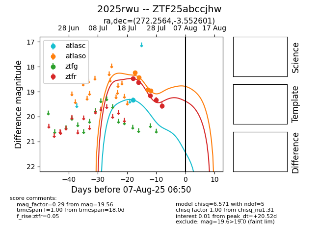

Target 2025rwu at 2025-08-07 07:30, see:
FINK: fink-portal.org/2025rwu
Lasair: lasair-ztf.lsst.ac.uk/objects/2025rwu
ALeRCE: alerce.online/object/2025rwu
TNS: wis-tns.org/object/2025rwu
YSE: ziggy.ucolick.org/yse/transient_detail/2025rwu
alt names
ZTF25abccjhw (ztf,fink)
2025rwu (tns,yse)
coordinates:
equatorial (ra, dec) = (272.2564,-3.55260)
galactic (l, b) = (24.8738,+7.76975)
photometry
last atlasc=19.32, atlaso=18.95, ztfr=19.56
1 atlasc, 4 atlaso, 5 ztfr detections
